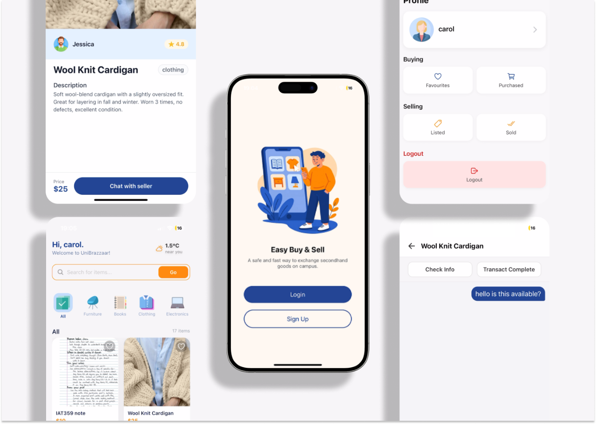
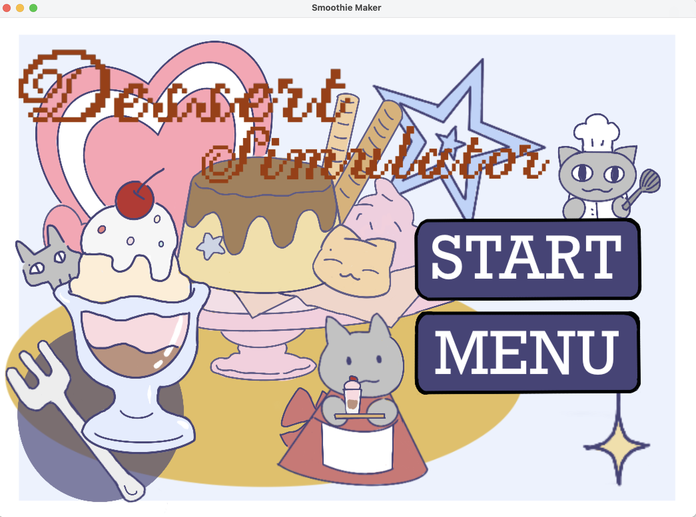
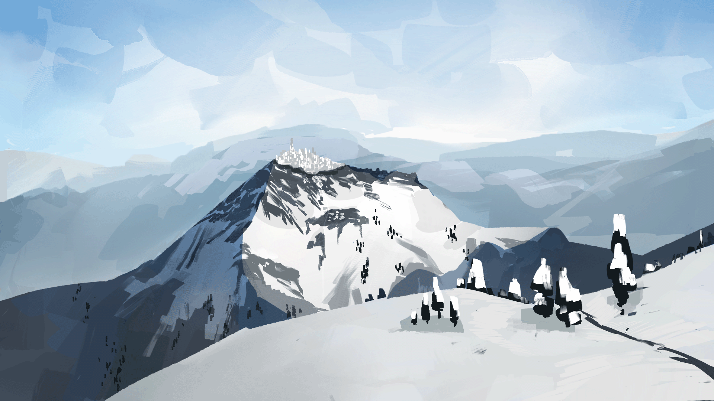
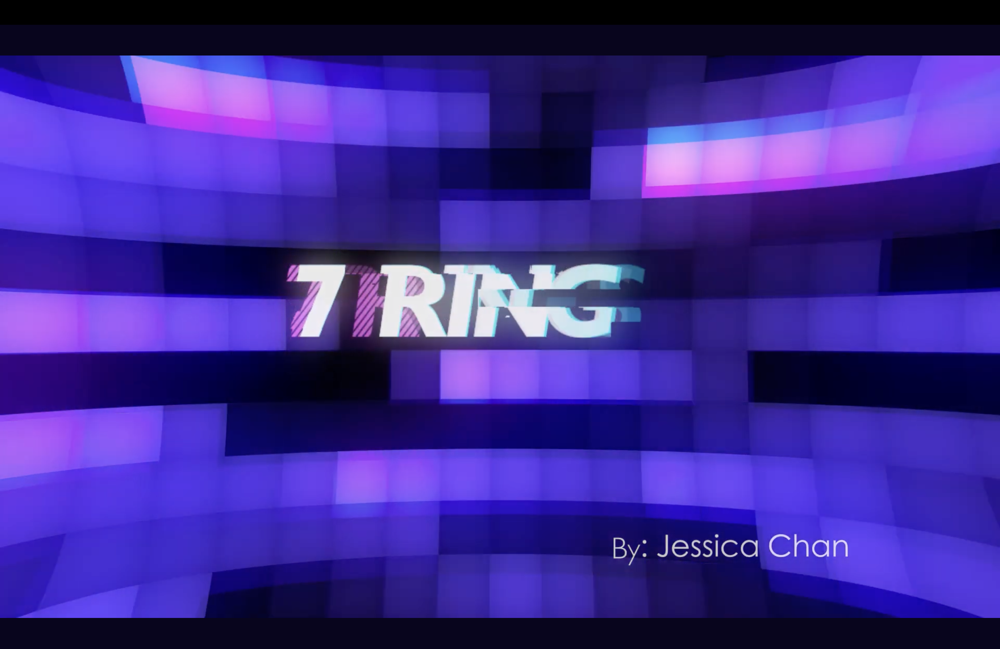

UniBazaar
Making second-hand shopping feel closer to campus.
Read the case studyJessica Chan / Visual & interactive designer
Selected portfolio · 2023—2026I turn ideas into expressive visuals and thoughtful digital experiences — from a campus marketplace to a world of hand-drawn desserts.
Explore my workA mix of systems, stories, and a little play.

Making second-hand shopping feel closer to campus.
Read the case study
A hand-drawn world made for mixing, making, and playing.
Read the case study
Small movements that bring illustrated worlds to life.
Read the case study
Turning a musical rhythm into a visual one.
Read the case study